![Vi Na Vi]()
Vi Na Vi
ENGINEERING & TECHNOLOGIES
Ingénierie – Instrumentation – Automatisation – SCADA
Ingénierie – Instrumentation – Automatisation – SCADA

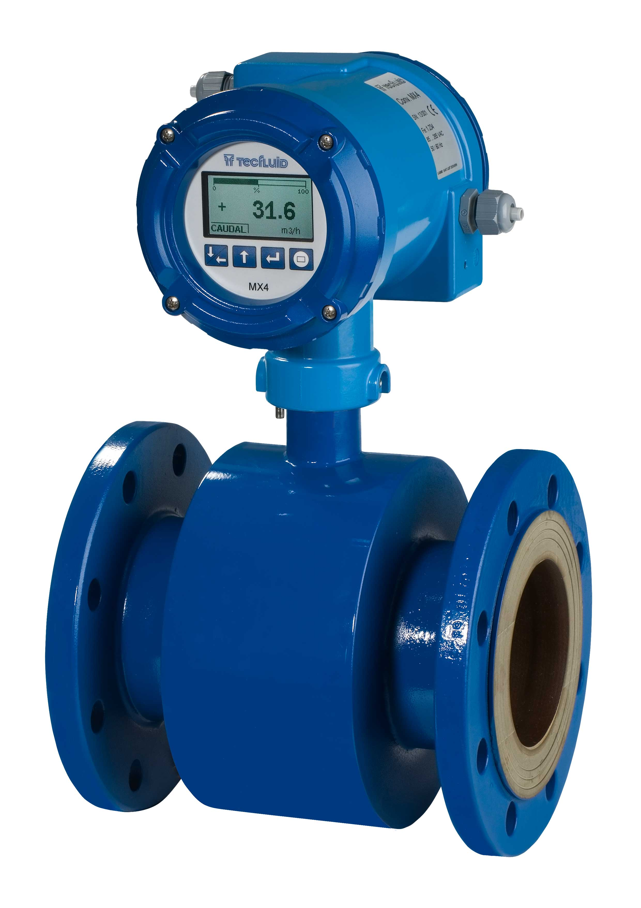
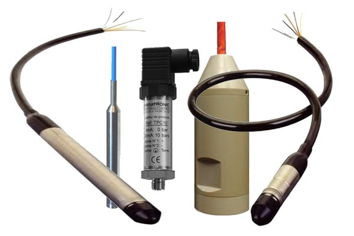
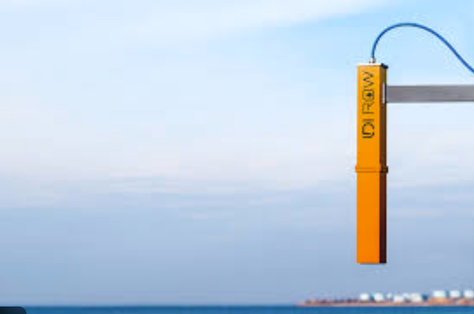

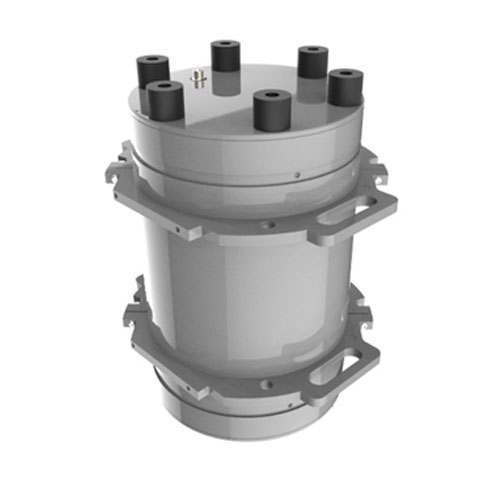

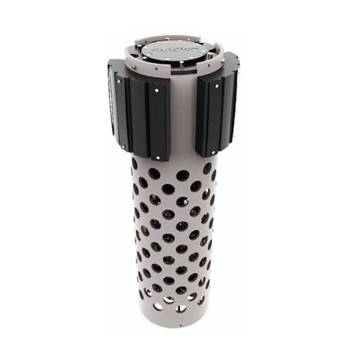
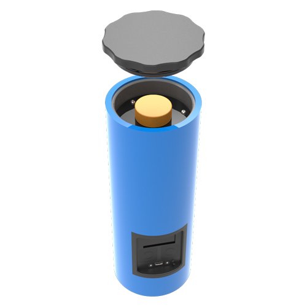
Vi Na Vi met à disposition une gamme complète d’analyseurs, d’échantillonneurs automatiques et d’enregistreurs de données conçus pour offrir une surveillance avancée de la qualité de l’eau potable, industrielle et des eaux usées. Grâce à nos partenaires canadiens spécialisés, nous distribuons des analyseurs précis et robustes capables de mesurer en continu les paramètres essentiels — pH, turbidité, conductivité, oxygène dissous, ammonium, nitrates, phosphates, métaux lourds, chlore résiduel, et bien plus encore.
Pour les applications nécessitant une acquisition multisource, un enregistrement longue durée et une transmission fiable des données, nous proposons également le Multilog 2 / Metrinet, un enregistreur multicanal de nouvelle génération. Cet équipement permet de connecter plusieurs capteurs simultanément, d’assurer la télémétrie cellulaire et de fournir une supervision complète des réseaux d’eau, des stations de traitement et des sites environnementaux isolés.
En combinant analyseurs en ligne, prélèvement automatique, télémétrie et intégration SCADA, Vi Na Vi offre une solution complète et adaptée aux besoins des municipalités, exploitants industriels, mines et agences environnementales souhaitant garantir un suivi continu, conforme et sécurisé de la qualité de l’eau.
En tant que fournisseur local et intégrateur spécialisé,Vi Na Vi garantit bien plus que la simple fourniture d’analyseurs et d’équipements de mesure. Nous offrons un accompagnement technique complet couvrant la sélection, l’installation, l’intégration et la maintenance des solutions de surveillance de la qualité de l’eau. Grâce à notre présence conjointe au Canada et en Afrique de l’Ouest, nous facilitons l'accès à des technologies de pointe tout en assurant un support de proximité adapté aux réalités opérationnelles locales.
Nos principaux apports :
Vi Na Vi provides a complete range of analyzers, automatic samplers, and data loggers designed to deliver advanced monitoring of drinking water, industrial water, and wastewater quality. Through our specialized Canadian partners, we supply precise and robust analyzers capable of continuously measuring essential parameters — pH, turbidity, conductivity, dissolved oxygen, ammonium, nitrates, phosphates, heavy metals, residual chlorine, and much more.
For applications requiring multisource acquisition, long-term data recording, and reliable transmission, we also offer the Multilog 2 / Metrinet, a new-generation multichannel data logger. This device allows the connection of multiple sensors simultaneously, ensures cellular telemetry, and provides comprehensive monitoring of water networks, treatment facilities, and remote environmental sites.
By combining online analyzers, automatic sampling, telemetry, and SCADA integration, Vi Na Vi delivers a complete solution tailored to the needs of municipalities, industrial operators, mining sites, and environmental agencies seeking continuous, compliant, and secure water quality monitoring.
As a local supplier and specialized integrator, Vi Na Vi provides far more than the simple delivery of analyzers and measurement equipment. We offer complete technical support covering the selection, installation, integration, and maintenance of water quality monitoring solutions. Thanks to our combined presence in Canada and West Africa, we facilitate access to cutting-edge technologies while ensuring proximity support adapted to local operational realities.
Our key contributions:
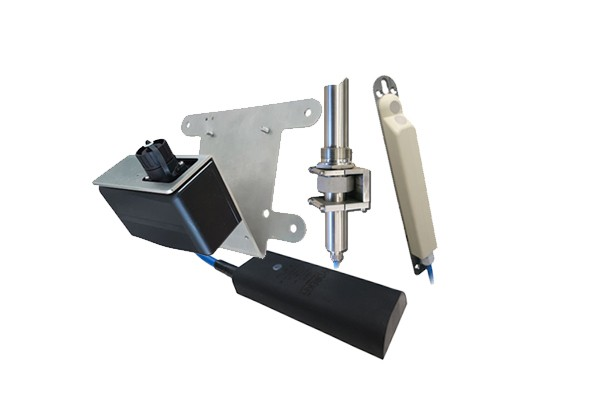
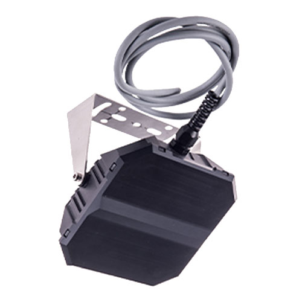
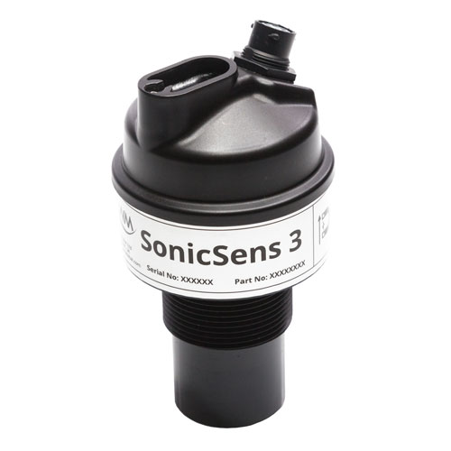
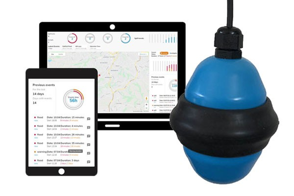
La mesure de niveau joue un rôle essentiel dans le contrôle des procédés, la gestion des réservoirs et la surveillance des ouvrages hydrauliques. Vi Na Vi propose une gamme complète de capteurs de niveau adaptés aux environnements industriels, miniers, environnementaux et au traitement des eaux. Nous offrons des solutions fiables, robustes et adaptées aux conditions les plus exigeantes.
Notre portefeuille technologique couvre les principales méthodes de mesure :
En combinant ces technologies, Vi Na Vi accompagne les opérateurs dans le choix de la solution la mieux adaptée à leurs besoins : haute précision, faible maintenance, mesures sans contact, suivi en continu ou détection de seuils. Notre expertise en instrumentation et télémétrie permet également d’intégrer ces capteurs dans des systèmes connectés, SCADA ou réseaux de supervision à distance.
Level measurement plays a crucial role in process control, reservoir management, and the monitoring of hydraulic structures. Vi Na Vi offers a complete range of level sensors designed for industrial, mining, environmental, and water treatment applications. We provide reliable, robust solutions engineered to perform even in the most demanding conditions.
Our technology portfolio covers the main measurement methods:
By combining these technologies, Vi Na Vi supports operators in selecting the solution best suited to their needs: high accuracy, low maintenance, non-contact measurements, continuous monitoring, or threshold detection. Our expertise in instrumentation and telemetry also allows us to integrate these sensors into connected systems, SCADA platforms, or remote supervision networks.
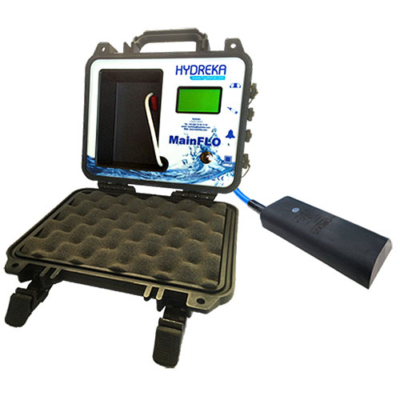
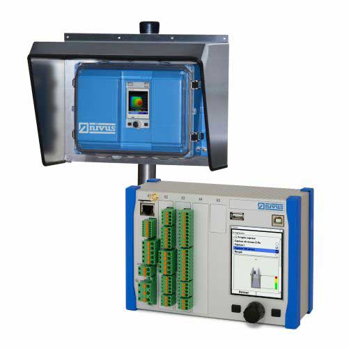
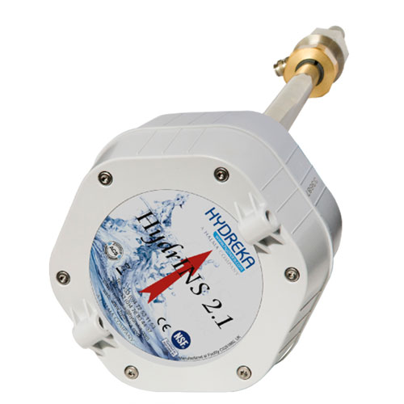
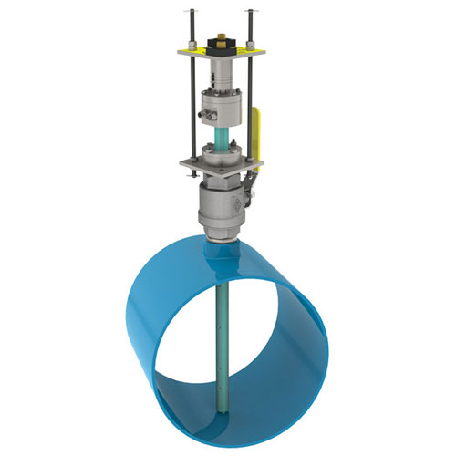
Vi Na Vi propose une gamme complète de débitmètres conçus pour répondre aux besoins des réseaux d’eau potable, d’assainissement, d’hydrologie et des procédés industriels. Nos solutions couvrent aussi bien les conduites fermées que les canaux ouverts, allant des installations permanentes aux campagnes de mesure temporaires.
Vi Na Vi offers a complete range of flow meters designed to meet the needs of drinking water networks, wastewater systems, hydrology applications, and industrial processes. Our solutions cover both closed pipes and open channels, from permanent installations to temporary measurement campaigns.

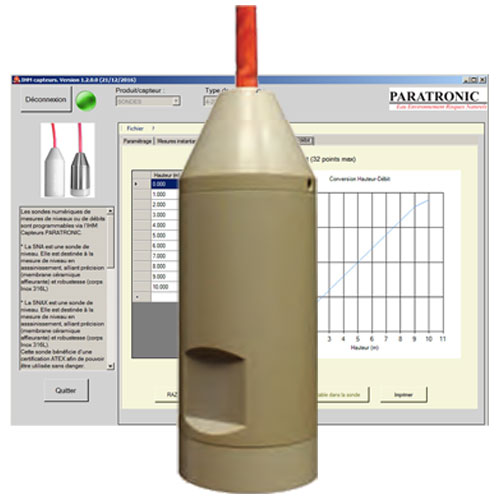

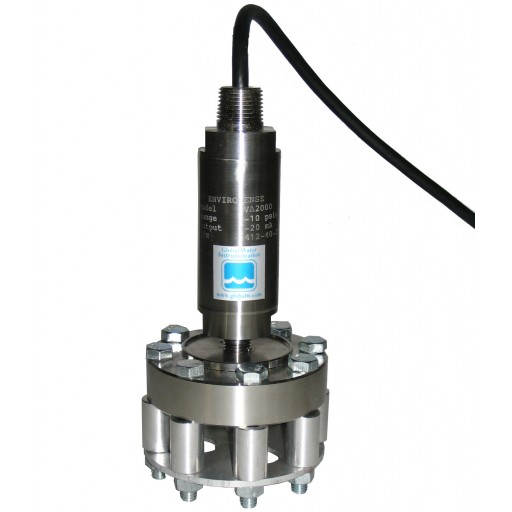
Vi Na Vi propose une gamme complète de capteurs et sondes immergées conçues pour la surveillance du niveau, de la pression et de la qualité de l’eau dans les réseaux d’eau potable, d’assainissement, d’hydrologie, d’eaux souterraines et d’environnements industriels.
Sondes robustes pour mesurer précisément le niveau d’eau dans les rivières, canaux, stations de pompage
ou déversoirs. Leur échelle de mesure ajustable (50 cm à 10 m) et leur signal 4–20 mA assurent une intégration
simple avec les systèmes de télégestion et SCADA.
Idéal pour : réseaux d’assainissement, ouvrages hydrauliques, bassins, canaux.
Capteurs haute précision destinés au suivi des nappes, forages, réservoirs et eaux usées. Leur construction
en inox ou titane et leur compatibilité avec de longues profondeurs garantissent fiabilité et durabilité même
dans des environnements difficiles.
Idéal pour : eaux souterraines, réservoirs, industries, surveillance environnementale.
Sondes multiparamètres autonomes permettant la mesure du niveau d’eau, mais aussi de la
conductivité, salinité et température. Dotées d’une grande mémoire et d’une autonomie pouvant dépasser 10 ans,
elles conviennent parfaitement aux suivis hydrologiques continus, aux piézomètres et aux zones côtières.
Idéal pour : hydrologie, environnement, eaux souterraines, études côtières.
Vi Na Vi offers a complete range of immersible sensors and probes designed for monitoring water level, pressure, and water quality in drinking water networks, wastewater systems, hydrology applications, groundwater monitoring, and industrial environments.
Robust probes designed to accurately measure water level in rivers, canals, pumping stations,
or spillways. Their adjustable measurement range (50 cm to 10 m) and 4–20 mA output ensure seamless integration
with telemetry and SCADA systems.
Ideal for: wastewater networks, hydraulic structures, basins, canals.
High-precision sensors designed for the monitoring of aquifers, boreholes, reservoirs and wastewater.
Their stainless steel or titanium construction and compatibility with great depths ensure reliability and durability
even in harsh environments.
Ideal for: groundwater, reservoirs, industrial sites, environmental monitoring.
Autonomous multiparameter probes enabling the measurement of water level as well as
conductivity, salinity and temperature. With large memory capacity and autonomy exceeding 10 years,
they are perfectly suited for continuous hydrological monitoring, piezometers, and coastal zone studies.
Ideal for: hydrology, environmental monitoring, groundwater, coastal studies.

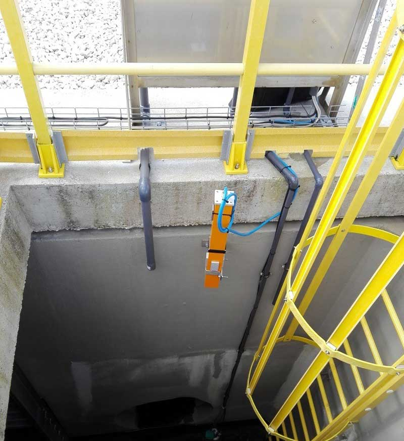
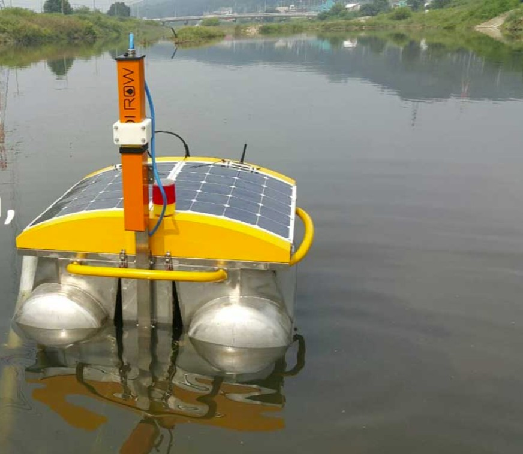
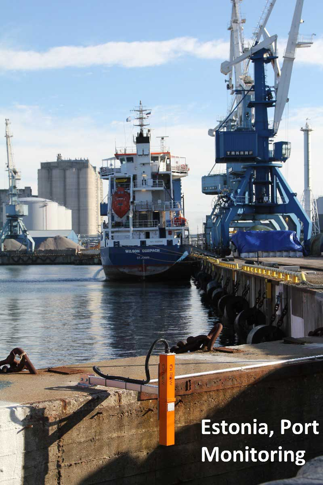
Le LDI ROW est un capteur autonome de détection d’hydrocarbures capable d’identifier des films d’huile extrêmement fins — jusqu’à 1 µm — sur l’eau ou dans des environnements industriels, avec une portée pouvant atteindre 10 mètres.
Grâce à sa technologie sans contact, il assure une surveillance continue des fuites, déversements et pollutions aux hydrocarbures, que ce soit dans les milieux naturels, les réseaux d’assainissement ou sur les installations industrielles. Sa conception robuste et son fonctionnement sans maintenance lourde en font une solution fiable pour les sites sensibles.
Le LDI ROW est proposé en trois versions pour répondre aux différents environnements d’utilisation :
Côté intégration, le LDI ROW dispose de sorties industrielles universelles (Modbus, 4–20 mA, relais), permettant son raccordement direct à des automatismes, systèmes de contrôle ou plateformes de télémétrie. Plusieurs capteurs peuvent également être interconnectés afin de couvrir de grandes zones.
En tant que partenaire technique, Vi Na Vi assure une prise en charge complète autour du LDI ROW, depuis le choix de la technologie jusqu’à l’exploitation des données sur le terrain.
Grâce à son expertise en instrumentation et supervision, Vi Na Vi transforme le LDI ROW en une solution clé en main pour la détection précoce de pollutions aux hydrocarbures.
Modern geolocation plays a key role in mapping, asset management, environmental monitoring, and field operations. Thanks to next-generation GNSS receivers, it is possible to obtain reliable and accurate positioning data, suitable for even the most demanding environments. Compact, robust, and easy to integrate with today’s digital tools, these receivers deliver real-time positioning for industrial, urban, or environmental applications.
The LDI ROW is an autonomous hydrocarbon detection sensor capable of identifying extremely thin oil films — down to 1 µm — on water surfaces or in industrial environments, with a detection range of up to 10 meters.
Thanks to its non-contact technology, it provides continuous monitoring of leaks, spills, and hydrocarbon pollution, whether in natural environments, wastewater networks, or industrial facilities. Its robust design and low-maintenance operation make it a reliable solution for sensitive sites.
The LDI ROW is available in three versions to meet different operating environments:
For integration, the LDI ROW features universal industrial outputs (Modbus, 4–20 mA, relay), allowing direct connection to control systems, automation equipment, or telemetry platforms. Multiple sensors can also be interconnected to cover large areas.
As a technical partner, Vi Na Vi provides end-to-end support for the LDI ROW, from technology selection to field data exploitation.
With its expertise in instrumentation and supervision, Vi Na Vi turns the LDI ROW into a complete turnkey solution for early detection of hydrocarbon pollution.